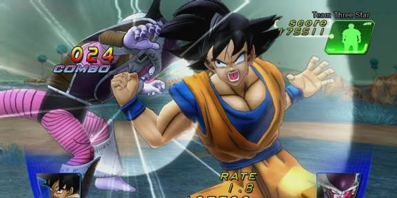

Dragon Ball For Kinect é um fracasso👍
04 de novembro de 2026, quando eu consegui todas as conquistas desse jogo
Nesse texto, vou descrever como foi fazer 100% desse jogo.
O jogo em si, tem uma ideia muito legal, onde você com o seu corpo pode interagir com o mundo de Dragon Ball. Porém, o acessório "Kinect" do Xbox 360 é ruim demais para sua época, apesar de terem jogos até que bons para ele, atrapalhou muito na experiência e provavelmente os desenvolvedores não souberam otimizar bem os movimentos, com alguns sendo completamente desnecessários que só serviram para preencher espaço. Dito tudo isso, conseguir todas as conquistas nem foi dificil na verdade, você só precisa fazer o modo história junto com o modo de jogo bonus chamado "Score attack" e fazer um Perfect em qualquer luta desse modo na dificuldade dificil e o mais importante é ter paciência com o joguinho. Nota final 4/10
Imagem do jogo:
